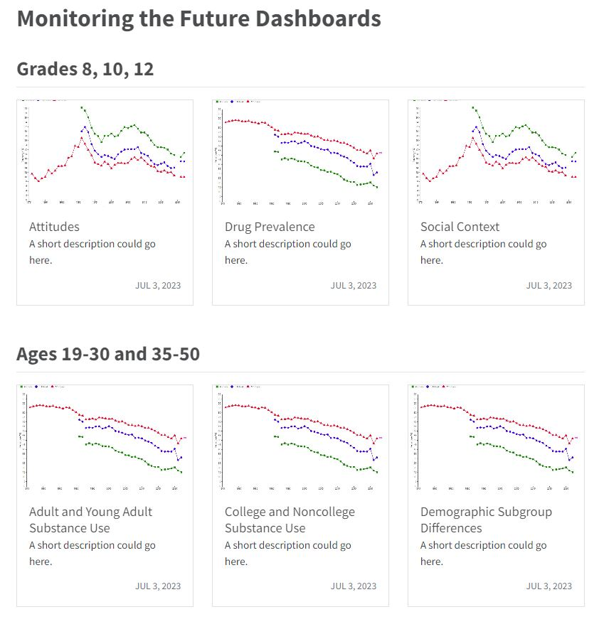
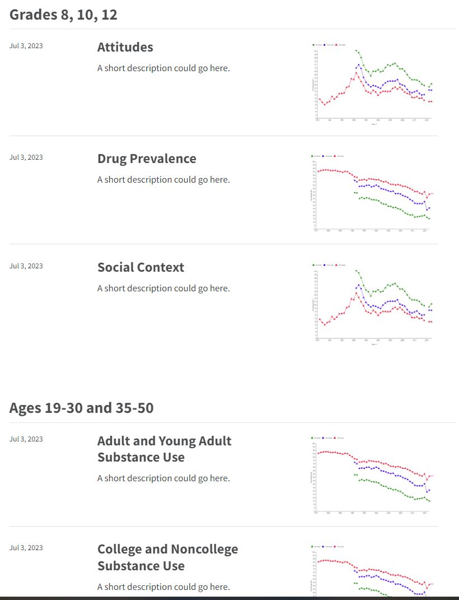
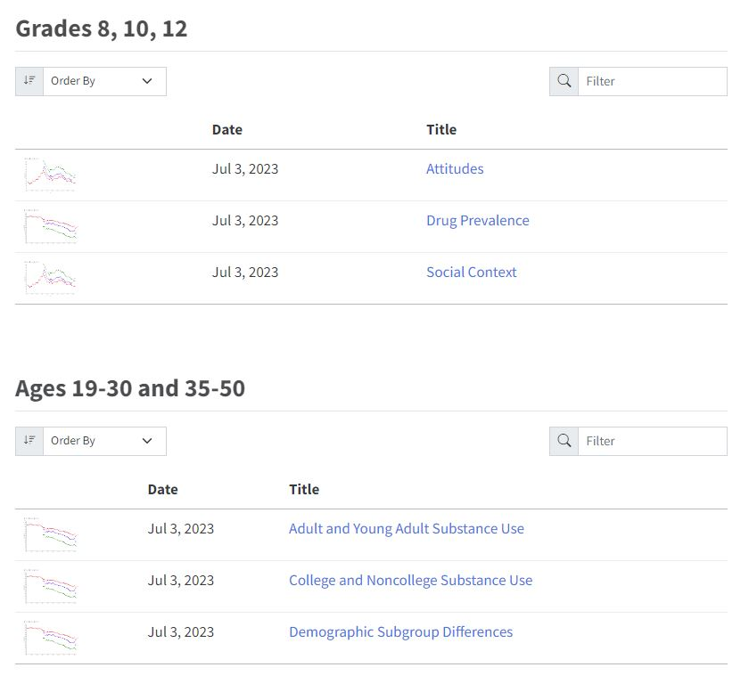

Listing Options
Currently, I have listing pages set to Grid but any of these options can be applied.
Dashboard Listing Types
Grid style listings display a card for each item.

List will appear in full width rows that display the item’s metadata (author and date), title, description, and image.

The table listing style provides a traditional tabular layout.

Listing Field Options
Currently only title, image, description, and date show on each listing card but more can be added. Here is the list of field options.
| Field Name | Description | |
|---|---|---|
title |
The title of the item, read from the title field of the front matter (or the first H1 of the document). |
|
subtitle |
The subtitle of the item, read from the subtitle field of the front matter. |
|
author |
The author of the item, read from the author field of the front matter. |
|
description |
The description of the item, read from the description or abstract field of the front matter or from the first paragraph of the document. |
|
date |
The date of the item, read from the date field of the front matter. |
|
image |
The image for this item, read from the image field of the front matter, or automatically discovered by taking the first of an image of class preview-image, an image with a file name starting with feature, cover, or thumbnail, or the first image to appear in the document. |
|
image-alt |
The alt text for the image for this item. | |
reading-time |
An estimate of the reading time for this item, computed by counting the words in the item and assuming a reading speed of 200 words per minute. | |
categories |
Categories for the item, read from the categories field of the front matter. |
|
filename |
The name of the input file. | |
file-modified |
The last modified date of this input file. | |